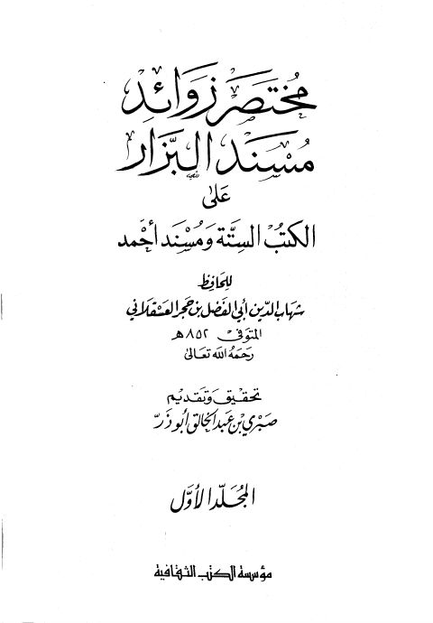

Downloads need an internet connection.
مختصر زوائد مسند البزار على الكتب الستة ومسند أحمد- ت. صبري
Authors: أحمد بن علي بن حجر العسقلاني
Editors: صبري عبد الخالق
Publishers: مؤسسة الكتب الثقافية
**▫️ العنوان: مختصر زوائد مسند البزار على الكتب الستة ومسند أحمد- ت. صبري** ▪️ المؤلف: #أحمد_بن_علي_بن_حجر_العسقلاني ▫️ المحقق: #صبري_عبد_الخالق ▪️ الناشر: #مؤسسة_الكتب_الثقافية ▫️ تاريخ النشر: 1412هـ 1992م ▪️ بلد النشر: بيروت، #لبنان ▫️ الطبعة: 1 ▪️ عدد الأجزاء: 2 ▫️ الصفحات: 1422 ▪️ نوع الوعاء: #كتاب ▫️ التصنيف الرئيسي: #الحديث_وعلومه ▪️ التصنيف الفرعي: #تخريج ۪